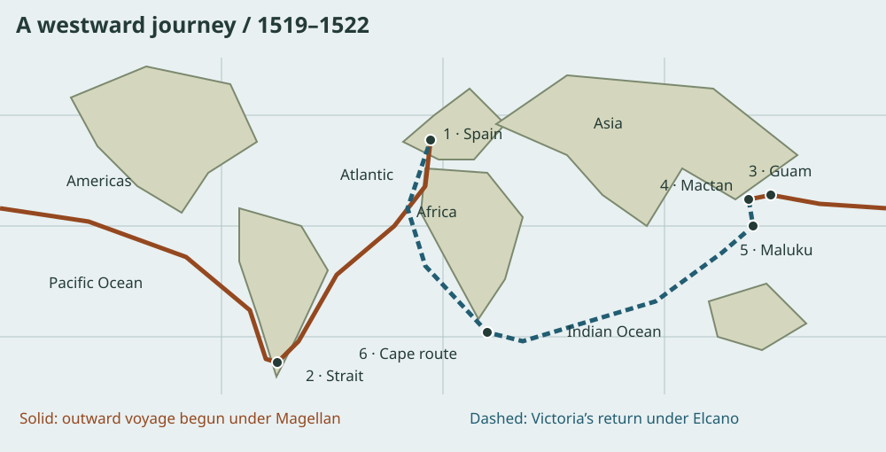
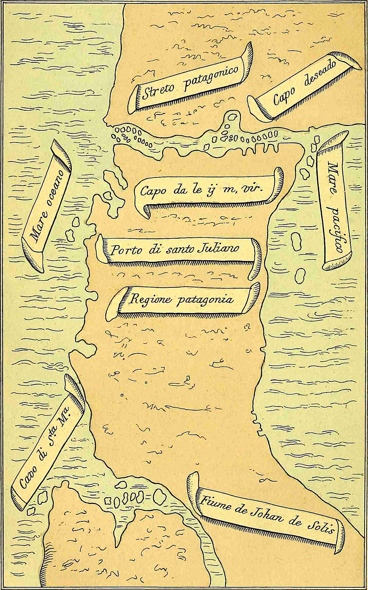

What happens when the ocean is much wider than your plan? Follow a voyage that changed European maps—and ask whose knowledge, labor, and decisions kept it moving.
Big idea: Ferdinand Magellan began the expedition; Juan Sebastián Elcano and the surviving crew of Victoria completed the first recorded circumnavigation. Magellan did not sail all the way around Earth.
45–60 minutes · Predict → investigate → explain

Classroom route atlas · Original schematic
Trace the solid line from Spain across the Pacific. Follow the dashed line for Victoria’s return under Elcano. The Pacific route continues across the left and right map edges. After Magellan’s death, other leaders and crews continued to Maluku before Elcano’s return leg.
ClassroomOS original illustration. Continents, stops, and route are approximate; not a historical chart or navigation map.
01 / Before the departure
Why sail west for spices?
A Portuguese sailor working for Spain
Born around 1480, Magellan gained experience in Portuguese voyages and warfare in the Indian Ocean and Southeast Asia, including the conquest of Malacca in 1511. He later secured Spanish support for a westward route to the Maluku Islands, a source of valuable cloves. Spain’s King Charles I backed the venture.
The goal was access to trade and imperial power. Completing a circuit of Earth became the expedition’s achievement; it was not simply a sightseeing mission.
Known to whom?
Asian merchants and island communities already sailed, traded, and knew these waters. Pacific islanders had long histories of ocean navigation. A place newly recorded by Europeans was not a place without people or knowledge.
The 1494 Treaty of Tordesillas divided Spanish and Portuguese claims. Those royal claims did not mean the inhabitants consented to foreign rule.
The voyage was a network of people
Magellan and the multinational crews
Pilots, sailors, carpenters, cooks, and officers worked across five ships. Command disputes, storms, disease, and shortages made survival a collective problem. Leadership included coercion and harsh punishment as well as navigation.
Elcano
A Basque mariner from what is now Spain, Elcano eventually commanded Victoria’s return. Credit the crew’s seamanship and labor alongside the commander. A voyage can continue after its original leader is gone.
Enrique and local interpreters
Enrique, enslaved by Magellan, contributed language skills in Southeast Asia. Translation made encounters possible, but language ability did not erase unequal power. Claims that Enrique personally completed the first circumnavigation depend on an uncertain birthplace and an undocumented later journey.
Lapulapu and Antonio Pigafetta
Lapulapu’s forces resisted Magellan at Mactan. Antonio Pigafetta, a participant who survived, recorded the voyage. His account is invaluable, but his admiration for Magellan and European viewpoint shape the story. Local people were decision-makers, not scenery.
First action: Select each stage. Identify one problem that changed the plan and one person or group whose work mattered.

Historical map · Reproduced in an 1874 edition
This reproduction of Pigafetta’s map turns a difficult passage into a visible channel. Compare its symbols and orientation with our modern route schematic. What information would a sailor still need before using it?
Antonio Pigafetta; reproduction in the Hakluyt Society’s 1874 English edition, digitized by Project Gutenberg. Public domain. Source and edition.Track what happened to all five ships
Santiago: wrecked while scouting in South America in 1520.
San Antonio: deserted in the strait and returned to Spain.
Concepción: burned in the Philippines in 1521 when too few crew remained to operate three ships.
Trinidad: attempted an eastward Pacific return; it did not complete the circuit and its survivors were captured by the Portuguese.
Victoria: sailed west across the Indian Ocean and around Africa to Spain under Elcano.
“Only one ship completed” does not mean every person on the other ships died. Some returned separately; some were captured. Counts depend on which departure, arrival, and people a source includes.
03 / STEAM is a set of practices
The ocean toolkit
Science · Observe winds and health
Sailors watched weather, currents, and unfamiliar plants and animals. Long periods without fresh food contributed to scurvy, now understood as vitamin C deficiency. Royal Museums Greenwich: scurvy. Their suffering is evidence of a provisioning problem; they did not have the modern biochemical explanation.
Technology · Extend the senses
Compasses gave direction; instruments such as mariner’s astrolabes measured celestial altitude. Latitude could be estimated from sky observations and tables. Longitude remained much harder to determine accurately at sea: a reliable marine chronometer lay centuries in the future.
Engineering · Keep a system working
Hull repairs, sails, rigging, storage, and pumps all mattered. A sound ship could still face hunger; plentiful cargo could still overload a damaged hull. Test the whole system, not just one successful part.
Arts · Make a usable record
Pigafetta combined descriptions, vocabulary lists, and maps. A journal selects what to notice and how to describe it. Drawings communicate spatial relationships, but a compelling image does not establish that its author understood every encounter.
Mathematics · Estimate, then revise
Dead reckoning updates a position using estimated heading, speed, and elapsed time. Wind and current can move a ship away from that estimate. An accurate calculation can still produce a poor prediction when its inputs are wrong.
Provisioning lab: will the food last?
Predict: A ship has 9,000 person-days of food. Can it support 100 people for a 100-day crossing? A person-day is one person’s daily ration.
Test: Change the crossing estimate to 120 days. Find a crew size that leaves a reserve. Explain: why does a longer ocean change an otherwise correct plan?
This is an invented fixed-ration classroom model, not the fleet’s actual inventory. It omits spoilage, water, changing crew numbers, and opportunities to resupply. Adequate calories also do not guarantee adequate vitamin C.
Engineering decision: what did the crossing reveal?
The ships sailed successfully, but the crossing lasted longer than expected and fresh food ran short. Choose the supported conclusion.
04 / A strange connection between travel and time
The missing-day mystery
Near the end of the journey, the travelers found that their carefully kept date was one day behind the local calendar. Could a whole crew forget a day—or could movement around Earth explain it?
Earth rotates 360° in about 24 hours: 15° corresponds to one hour of local solar time. Moving west shifts local noon later. Over a complete westward circuit, those small shifts add up to one day. To match the calendar at home, the travelers needed to advance their date by one day.
Time lab: add up the shifts
Predict → test: Where does the model reach 12 hours? What happens at 360°? This is cumulative travel around the globe, not a longitude coordinate.
The model uses mean solar time and ignores the uneven speed of real sailing. Modern time zones and the International Date Line coordinate clocks and calendars; the crew was not crossing today’s formally defined date line.
Evidence lab: what does a source support?
These are invented classroom evidence bundles. Select one, inspect the limits, then interpret it.
Draw the route on a world map. Mark a navigation problem, a supply problem, and an encounter involving local choices. Separate an observation (“the ship returned to its departure region”) from an interpretation (“one commander deserves all the credit”). Add one uncertainty and a source that could help resolve it.
Core challenge
Explain how two STEAM practices helped with different problems. Include one numerical result from a lab and one contribution by someone besides Magellan.
Stretch challenge
Write a reserve-food rule for an uncertain crossing. Then explain why your rule alone cannot prevent scurvy or determine longitude.
History and consequences
Circumnavigation supplied practical evidence that oceans connect around a spherical Earth. Educated Europeans already knew Earth was spherical; this voyage did not invent that idea. Commercial achievements must also be examined alongside enslavement, violence, religious pressure, and resistance. Whose perspective changes the meaning of “success”?
Teacher notes and exit-ticket answers
Suggested pacing: foundations 10 minutes; route 10; toolkit and provisioning 15; time and evidence 10; notebook 10. At 100 people and 100 days, demand is 10,000 person-days: a 1,000 person-day shortfall and only 90 days of coverage. At 120 days, 70 people need 8,400 person-days and leave 600. A 180° westward circuit accumulates 12 hours; 360° accumulates 24 hours, requiring a one-day calendar advance.
Independent records can strengthen a claim about dates and movement. They do not make a journal neutral or establish local consent. A later painting can be evidence of remembrance, not an eyewitness record. Younger learners can sequence stops and compare supplies; older learners can examine uncertainty, translation, and power.
Compare the expeditions: both depended on instruments, records, logistics, and other people’s knowledge. How did the sponsors’ goals shape what was recorded?
Use the sources above to check the route and historical claims. Ask who wrote each account, how close they were to the events, and whose voice is missing.